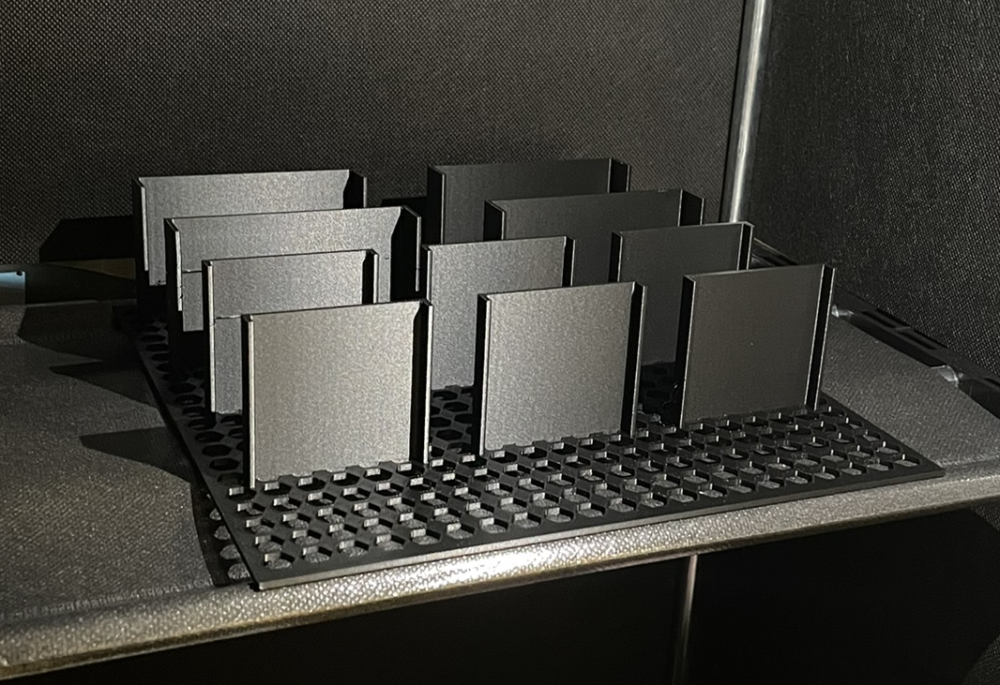
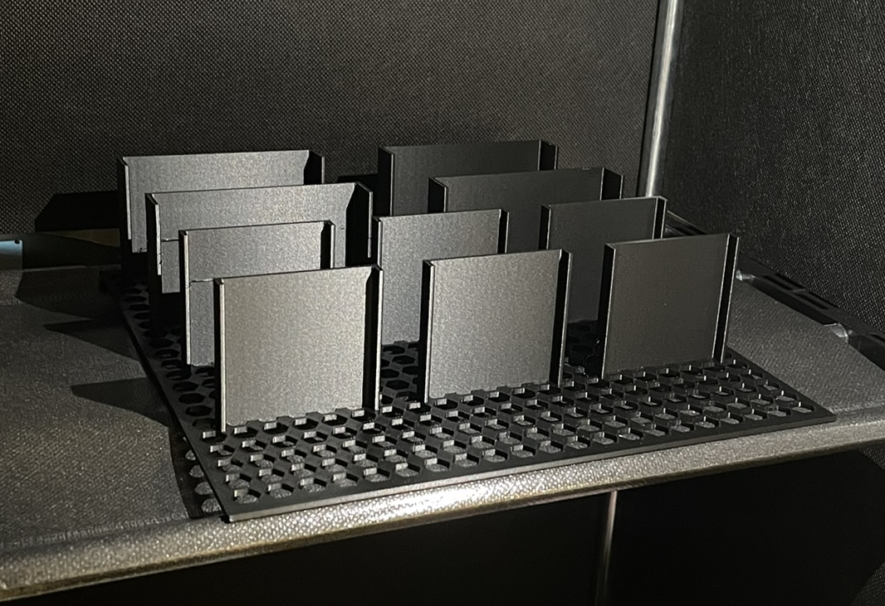

Projects

Design and Prototyping of a Syringe-Actuated Exoskeleton Arm
As part of a university team project, I led the design and fabrication of a motorless exoskeleton arm that used syringes and elastic return for assisted curling motion. The system was designed to enhance arm movement using inexpensive materials, integrating mechanical advantage through jointed levers and lightweight 3D-printed components.
Read More →
Jet Vane Thrust Vector Control for High-Power Rocketry
I developed a jet vane thrust vectoring mechanism to steer a high-power solid rocket using servo-actuated carbon-fiber vanes positioned in the exhaust stream. The system allows for directional control during vertical ascent, and includes aerodynamic and thermal shielding considerations for high-temperature plume exposure.
Read More →
3D‑Printed Rotatable Amp Stand
A compact, wedge-style rotating stand designed to angle a 12 lb guitar amp upward for better room coverage and monitoring. Features a low-profile pivot with captured hardware, reinforced infill in load paths, and anti-slip feet. Optimized to print fast with minimal material while maintaining stiffness.
Read More →Industrial & Product Design


Compact 3D‑Printed Phone Stand
Pocketable, two-angle stand with cable pass-through and stable base.


Wall‑Mounted Katana Holder
Parametric mounts with felt-lined saddles and concealed fasteners.
 


Perfume Mat & Display Holder
Non-slip tray with modular bottle docks and drip containment lip.


Pill Bottle with Threaded Cap
Print‑in‑place threads, knurled cap, and gasket groove for sealing.


iPhone Wall Mount (Video Calling)
Orientation‑locking mount with soft inserts and hidden cable routing.